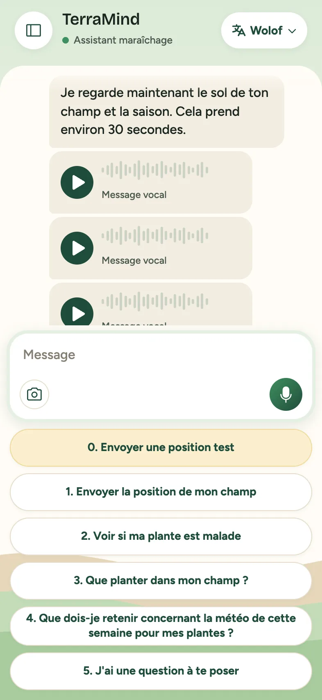

PAS Challenge 2026 · SALTIS
Fiche de projet
Le conseiller agricole dans la poche des maraîchers des Niayes
Le maraîcher envoie à TerraMind la position de son champ, puis la photo d'une plante malade ou une question. Selon sa demande, TerraMind lui dit quoi planter, quel risque la météo annonce, ou quelle est cette maladie et que faire. Il répond en français ou en wolof à l'oral, et cite à chaque fois le document d'où vient sa réponse.
L'équipe étudie à l'ENSAE Dakar (École nationale de la statistique et de l'analyse économique)
AKAlioune Abdou Salam KaneChef de projet, responsable du moteur, du bot Telegram et de la conception de l'application mobile
JKJudicaël Oscar KafandoResponsable de la collecte des données et de l'entraînement des modèles
NFNdeye Ramatoulaye Ndoye FallResponsable du contenu agricole, du wolof et du pitch
Comment essayer le produit TerraMind ?
Il y a trois façons de le faire, au choix. Scannez un code avec un téléphone, ou cliquez sur le lien. Le guide pas à pas est en page 4. Pas de plante malade sous la main ? Prenez une photo d'essai : terramind-sigma.vercel.app/essai
1. L'application en ligneRien à installer, ordinateur ou téléphone.terramind-afrique.vercel.app

2. Le bot TelegramIl faut un compte Telegram.t.me/TerraMindAfriqueBot
3. L'application AndroidÀ installer (APK), Android seulement.lien complet en page 5
À savoir. Le lien de l'application en ligne existe pour que le jury puisse tester sans rien installer, parce qu'un lien est demandé. Dans la vraie vie, l'agriculteur utilise TerraMind sur son téléphone : le bot Telegram, ou l'application Android (3e façon). Chaque canal marche en français (réponses écrites) ou en wolof (réponses à écouter), au choix de l'agriculteur.
1Contexte et problème
Les Niayes, de Dakar à Saint-Louis, sont la grande zone de maraîchage du Sénégal : tomate, oignon, chou, pomme de terre. Un petit maraîcher y décide seul trois choses qui font sa récolte : quoi planter sur son sol et à quelle saison, quand se méfier d'une maladie qui arrive avec l'humidité, et quelle est cette tache sur la feuille. Une erreur peut coûter la saison.
71 %
des exploitants horticoles des Niayes n'ont aucun niveau d'instruction : un conseil écrit et technique ne leur parle pas.
Recensement de l'horticulture des Niayes, Direction de l'Horticulture, données 2012 (71,3 %)
43,9 %
des ménages agricoles de Louga (20,6 % à Thiès) ont subi des ravageurs inhabituels, contre 15,3 % au niveau national.
Enquête agricole annuelle 2022-2023, DAPSA
99 %
des parcelles de chou reçoivent des insecticides (78 % pour l'oignon), souvent sans conseil sur le bon moment.
Enquête agricole annuelle 2022-2023, DAPSA
Les agents de conseil agricole sont peu nombreux et ne passent pas chaque semaine. Les savoirs existent pourtant : guides de l'ISRA et de la FAO, manuels de la Protection des végétaux, cartes des sols, météo par satellite. Mais ils sont dispersés, écrits, en français technique, et rarement reliés au champ précis de l'agriculteur.
TerraMind · PAS Challenge 20261 / 5
2Solution et valeur ajoutée
TerraMind rassemble ces savoirs et les rend utiles au champ précis de l'agriculteur, en quatre services :
🌱 Que planter ce mois-ci ?
TerraMind lit le sol au point du champ (carte iSDAsoil : part de sable, acidité) et le calendrier du guide ISRA / FAO, puis propose les cultures qui conviennent maintenant, parmi 8 cultures des Niayes.
🔔 Quel risque cette semaine ?
Il regarde la météo des derniers jours dans la zone du champ (NASA POWER) et dit si elle favorise le mildiou, l'alternariose ou un ravageur, avec des règles publiées et testées sur 2020-2025.
📷 Quelle est cette maladie ?
Une photo suffit. Un modèle de vision reconnaît 21 problèmes de la tomate, de l'oignon, de la pomme de terre et du poivron, puis explique en 4 temps : ce que c'est, pourquoi, que faire, comment éviter.
💬 Une question libre
L'agriculteur écrit sa question, ou la dit en wolof dans un message vocal sur Telegram. La réponse vient uniquement de nos 23 fiches, avec le document et la page.

Diagnostic photo

En wolof, à écouter
Vraies captures de l'application branchée sur le moteur en ligne. Le visage de l'écran d'accueil est une image générée par IA.
Ce qui rend TerraMind différent
- Rien d'inventé. Chaque conseil cite sa source (document et page). Un vérificateur indépendant a relu les fiches contre leurs sources.
- Il sait dire « je ne suis pas sûr ». Sous 60 % de confiance, il ne devine pas : il demande une autre photo.
- Jamais de produit chimique ni de dose. Une erreur de dose peut tuer la plante ou l'agriculteur : pour un traitement, TerraMind oriente vers un agent agricole.
- Le wolof à l'oral. Réponses dites à voix haute (76 notes vocales relues par un locuteur), questions vocales comprises grâce à Octopus.
3Utilisateurs cibles et cas d'usage
Qui : les petits maraîchers des Niayes (zone pilote : Rufisque, Thiès, Tivaouane, Kébémer), qui lisent peu ou pas le français. Ensuite, les agents de conseil, qui peuvent s'en servir sur le terrain.
Avant de semer. Moussa (un exemple) partage la position de son champ. TerraMind lui dit que son sol est sableux, pas acide, et quelles cultures il peut planter ce mois-ci, par exemple la carotte ou la tomate.
Pendant la culture. Il a planté de la tomate. Chaque semaine, il demande à TerraMind si la météo des derniers jours favorise une maladie de la tomate, et quoi surveiller.
Une tache apparaît. Il envoie une photo. « Cela ressemble à : mildiou », puis quoi faire tout de suite, et quand voir un agent agricole.
TerraMind · PAS Challenge 20262 / 5
4Architecture, en bref
Un seul moteur, plusieurs façades. L'application et le bot n'ont aucune logique agricole : ils posent la question au même moteur. C'est ce qui nous a permis de passer de WhatsApp à Telegram en quelques jours, quand Meta a bloqué notre compte.
Ce que voit l'agriculteur
📱 ApplicationAndroid (APK) et web · Expo
💬 Bot Telegramboutons, photos, notes vocales
🗄️ WhatsAppprêt, mis de côté
→
Le moteur
Moteur TerraMindPython · FastAPI · Render/v1/plan · /v1/alert/v1/diagnose · /v1/chatGarde-fous : seuil « pas sûr », jamais de dose, sources jointes à chaque réponse
→
Données et outils
🟫 Sol : iSDAsoilsable, argile, pH au point du champ
🌦️ Météo : NASA POWERhumidité, pluie, chaleur de la zone
🧠 Photo : MobileNetV3TOM2024, PlantVillage, PlantDoc
📚 23 fiches sourcéesISRA, FAO, DPV · Gemini reformule
🗣️ Octopus (outil du concours)écoute et parle le wolof
🗣️ Question vocale en wolof : note vocale sur Telegram → Octopus la transcrit → Gemini la traduit → le moteur cherche dans les fiches → Octopus dit la réponse en wolof, texte français dessous.
🌍 Le climat au cœur de TerraMind : s'adapter, sans aggraver
Aide le maraîcher à faire face aux effets du climat, comme :
- L'humidité et la chaleur, qui amènent les maladies. Quand l'air reste humide, le mildiou peut détruire une récolte en quelques jours. TerraMind lit chaque semaine la météo de la zone du champ et prévient avant : le maraîcher surveille et agit à temps, au lieu de perdre sa culture.
- Le manque de pluie et la mer qui avance, qui salent l'eau des puits. Dans les Niayes, la nappe des puits se salinise. Arroser au sel une culture qui ne le supporte pas, c'est la perdre : TerraMind demande si l'eau est salée et déconseille alors l'oignon et la carotte.
Sans aggraver le problème
Un outil pour le climat ne doit pas abîmer à son tour l'environnement. TerraMind limite son empreinte de bout en bout :
- Dans le champ : il ne conseille jamais de pesticide, mais d'abord la prévention (espacer les plants, enlever les parties malades), pour ne pas ajouter de produits dans le sol et dans la nappe.
- Pour faire tourner l'outil : un modèle photo de 17 Mo, sans carte graphique, et une application de 540 Ko : peu d'électricité et peu de données mobiles.
- Pour collecter les données : aucun capteur à fabriquer ni à installer ; tout vient de satellites et de cartes existantes.
Salinisation : Diallo et al. 2015 ; European Scientific Journal 2022. Tolérance au sel : guide ISRA / FAO 1987, tableau 1. Effet réel sur les pesticides : pas encore mesuré (tests avec les maraîchers).
Les choix et leurs raisons
| Choix | Pourquoi |
|---|
| Fiches écrites à la main + Gemini | L'IA reformule en français simple mais n'ajoute rien : si la réponse n'est pas dans une fiche, TerraMind le dit. Pas de produit ni de dose dans les fiches. |
| Petit modèle de vision | MobileNetV3 : 17 Mo, environ 15 ms par photo, tient sur un serveur gratuit. Un modèle 7 fois plus lourd (ConvNeXt) ne gagnait que 0,1 point sur TOM2024. |
| Vie privée | Aucun numéro de téléphone demandé. La position du champ est arrondie à environ 1 km. Rien de personnel n'est envoyé à Gemini. /oublier efface tout. |
TerraMind · PAS Challenge 20263 / 5
✓Guide de test, pas à pas
Pas besoin d'être sur place : la position « test » place le champ à Rufisque, dans la zone pilote. Pas de plante malade sous la main ? Téléchargez une photo d'essai : terramind-sigma.vercel.app/essai (mildiou, virose, acariens). Première réponse lente ? Le serveur gratuit se réveille en une minute environ, ensuite c'est rapide.
Façon 1 · L'application en ligne (5 min)
terramind-afrique.vercel.app · ordinateur ou téléphoneAucun compte
| 1 | Ouvrez le lien. Touchez Commencer, puis Français. | « Où est ton champ ? » |
| 2 | Touchez Envoyer une position test. Répondez Non aux deux questions, puis C'est bon. | L'accueil : « Bonjour · Rufisque (test) ». |
| 3 | Touchez Que planter dans mon champ ? | Ton sol : 62 % de sable, pH 6,6, « ni acide ni basique ». Puis les cultures conseillées ce mois-ci. |
| 4 | Revenez. Touchez Prendre ma plante en photo → Choisir dans ma galerie → la photo d'essai du mildiou. | « Cela ressemble à : Mildiou », la confiance du modèle, puis la fiche en 4 temps. |
| 5 | Revenez. Touchez J'ai une question à te poser, puis l'exemple Ma tomate a des taches brunes avec des cercles. | Alternariose ou tache cible : quoi faire, et les sources (guide ISRA / FAO, pages). |
| 6 | Revenez. Touchez J'ai planté → Tomate → C'est noté, puis Que dois-je retenir de la météo de cette semaine ? | Ce que la météo des derniers jours à Rufisque dit pour la tomate : un risque, ou « rien d'inquiétant ». |
Façon 2 · Le bot Telegram (5 min)
t.me/TerraMindAfriqueBot · avec un compte TelegramTéléphone ou ordinateur
| 1 | Ouvrez le lien, touchez Démarrer, puis Français. | Le bot se présente ; de grands boutons apparaissent en bas. |
| 2 | Touchez Envoyer une position test, répondez aux deux questions. | Le sol de Rufisque et ce qu'on peut planter maintenant, avec les sources. |
| 3 | Envoyez une photo d'essai (trombone 📎 à gauche de « Message »). | « Merci, je regarde ta photo », puis « Cela ressemble à : Mildiou » et la fiche. |
| 4 | Touchez J'ai une question à te poser et copiez : Comment éviter le mildiou de la tomate ? | 3 à 6 phrases simples, puis « Sources : … » avec les pages. |
| 5 | En wolof, à l'oral. Écrivez /langue, touchez Wolof, puis gardez le micro 🎤 appuyé et dites : « Naka laa mënë moytu mildiyu ci sama tamaate ? »
Prononcer : « Na-ka laa meu-neu moï-tou mil-di-you tchi sa-ma ta-maa-té ? »
Sens : « Comment puis-je éviter le mildiou sur ma tomate ? »Wolof seulement, moins d'une minute, endroit calme. | « J'ai compris ta question ainsi : … », puis la réponse dite en wolof, avec le texte en français dessous. |
Façon 3 · L'application Android (APK)
Téléphone Android seulement · 107 MoComme un agriculteur
| 1 | Scannez le code avec le téléphone Android et téléchargez le fichier. Ouvrez-le ; si Android le demande, autorisez l'installation depuis cette source. | L'icône TerraMind (feuille sur fond vert) apparaît. |
| 2 | Suivez les étapes 1 à 6 de la façon 1. Ici, Prendre la photo ouvre l'appareil photo, et Je suis dans mon champ utilise le vrai GPS. | Les mêmes réponses que la version en ligne : c'est le même moteur. |
TerraMind · PAS Challenge 20264 / 5
5Résultats et perspectives
| Brique | Résultat mesuré |
|---|
| 📷 Diagnostic photo | 91,7 % de bonnes réponses sur 1 058 photos de champs africains (TOM2024) jamais vues pendant l'apprentissage. 21 problèmes reconnus sur 4 cultures. |
| 🌱 Que planter | 8 cultures (tomate, pomme de terre, oignon, chou, poivron, carotte, piment, jaxatu), calendrier du guide ISRA / FAO, sol lu au point du champ. |
| 🔔 Alertes météo | 7 risques suivis (mildiou, alternariose, mineuse, noctuelle, teigne…), règles publiées testées sur la météo 2020-2025 de la zone. |
| 💬 Réponses sourcées | 23 fiches. Trois relectures indépendantes : environ 320 affirmations vérifiées contre leurs sources, 51 corrigées. |
| 🗣️ Wolof | 76 phrases relues par un locuteur, 76 notes vocales ; questions vocales comprises sur le bot (Octopus). |
| ⚙️ Fiabilité | 85 tests automatiques. Application en ligne : 540 Ko, utilisable en 4 s sur une connexion 3G (mesuré). |
Limites, dites franchement
- Sur des photos prises sur internet, dans d'autres conditions (PlantDoc), le diagnostic tombe à 56,9 %. C'est pourquoi il dit « je ne suis pas sûr » sous 60 %.
- Pas encore de test avec des maraîchers dans leur champ : c'est la prochaine étape.
- Les règles météo viennent d'études faites hors du Sénégal : TerraMind parle de « temps favorable », jamais de maladie certaine.
- Telegram est moins utilisé que WhatsApp dans les Niayes.
Et ensuite
- Tester avec des maraîchers de Rufisque et Thiès, avec leur accord, et ajouter des photos de leurs champs.
- Revenir sur WhatsApp (le code est prêt), une fois le statut d'entreprise obtenu.
- Un hébergement payant, pour que le serveur ne se mette plus en veille.
- Modèle économique visé : gratuit pour les agriculteurs ; des instituts paieraient un abonnement pour des données anonymes et regroupées par zone (maladies signalées, risques météo). Les données resteraient au Sénégal.
L'équipe
Trois étudiants en dernière année du cycle d'ingénieur statisticien économiste à l'ENSAE de Dakar : Alioune Abdou Salam Kane (chef de projet ; moteur, bot, application, site), Judicaël Oscar Kafando (IA et données : bases d'images, modèle de diagnostic), Ndeye Ramatoulaye Ndoye Fall (contenu agricole, wolof, tests, pitch).
Sources des chiffres : Direction de l'Horticulture, recensement des Niayes (données 2012) ; DAPSA, Enquête agricole annuelle 2022-2023. Données : iSDAsoil (CC BY 4.0), NASA POWER, TOM2024 (CC BY 4.0), PlantVillage (CC BY-SA 3.0), PlantDoc (CC BY 4.0). Guides : ISRA / FAO (Beniest et al., 1987), DPV / PADEN, KCOA-Africa, Ephytia (INRAE).
TerraMind · PAS Challenge 20265 / 5